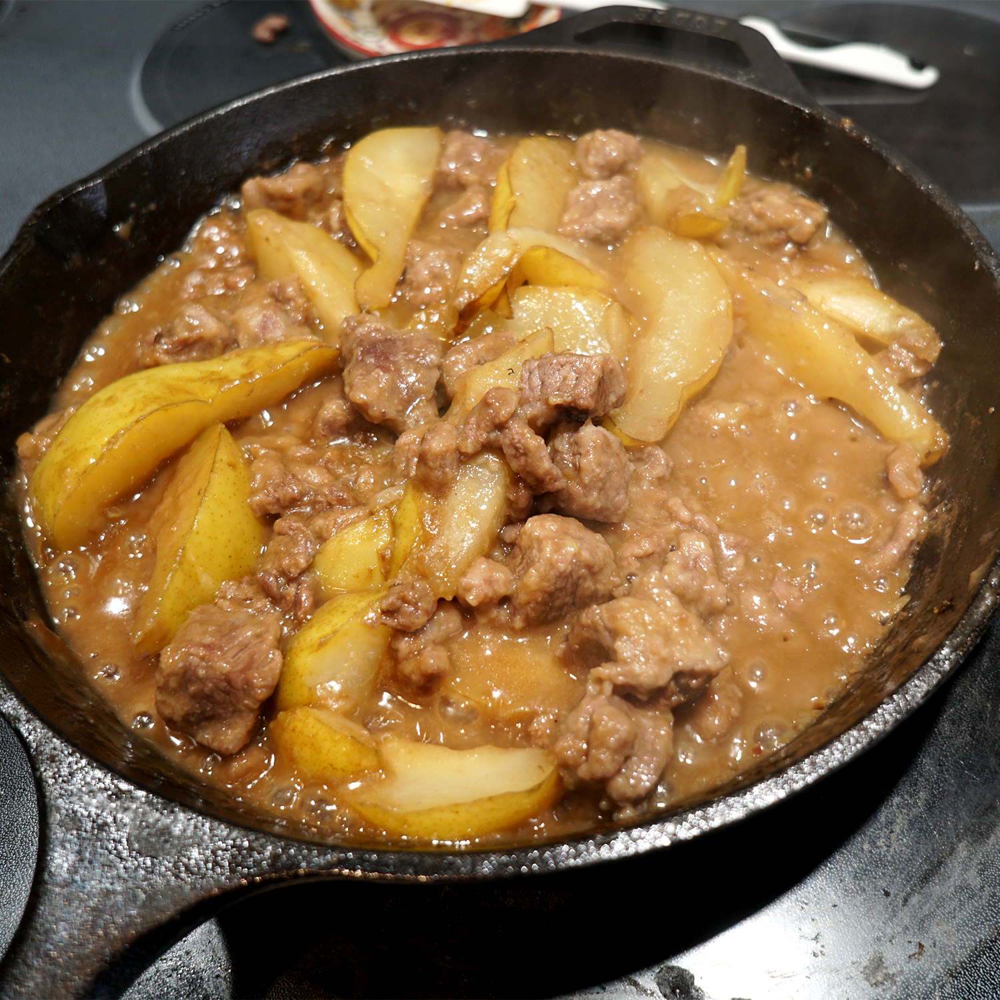
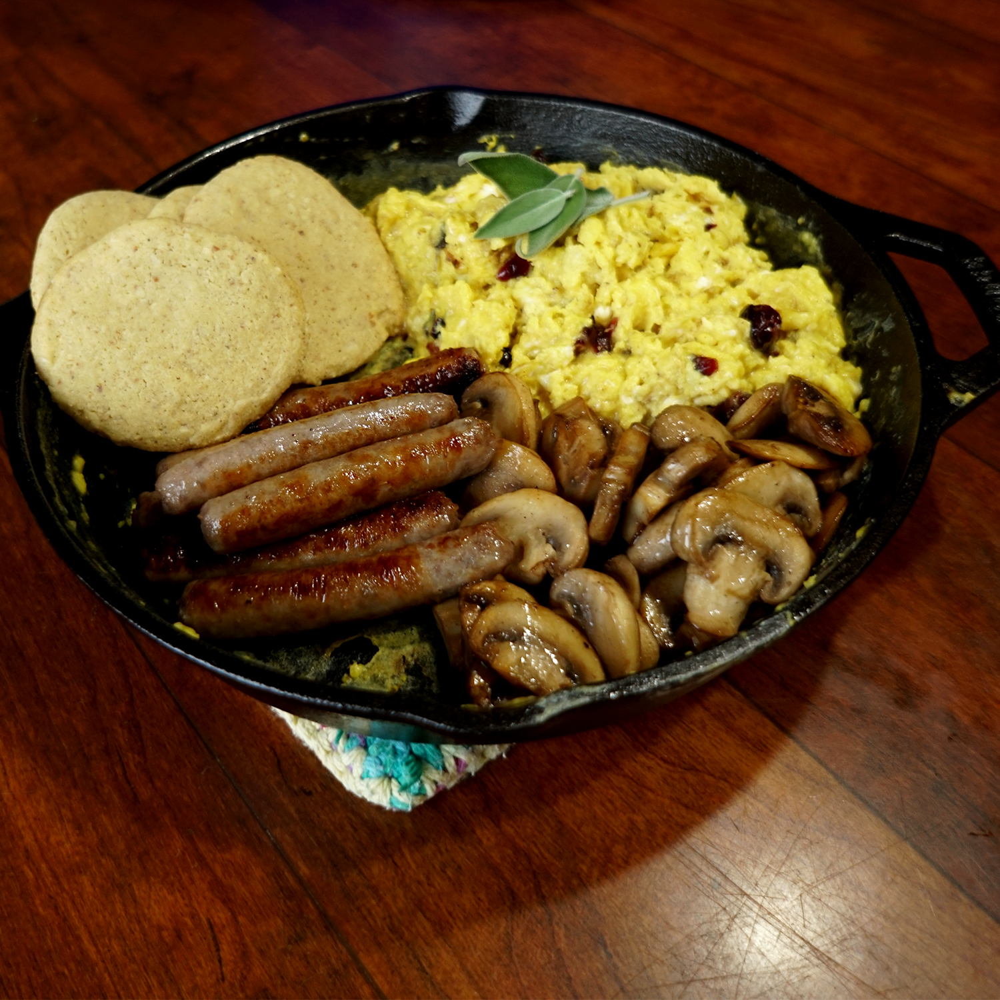
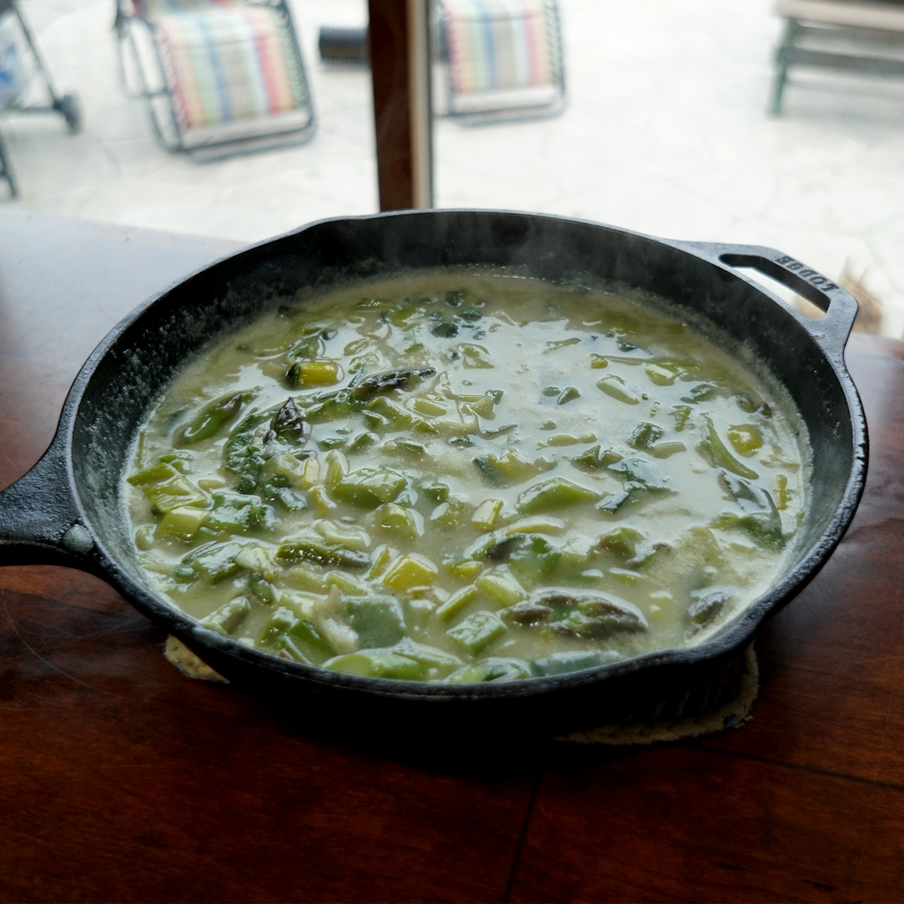
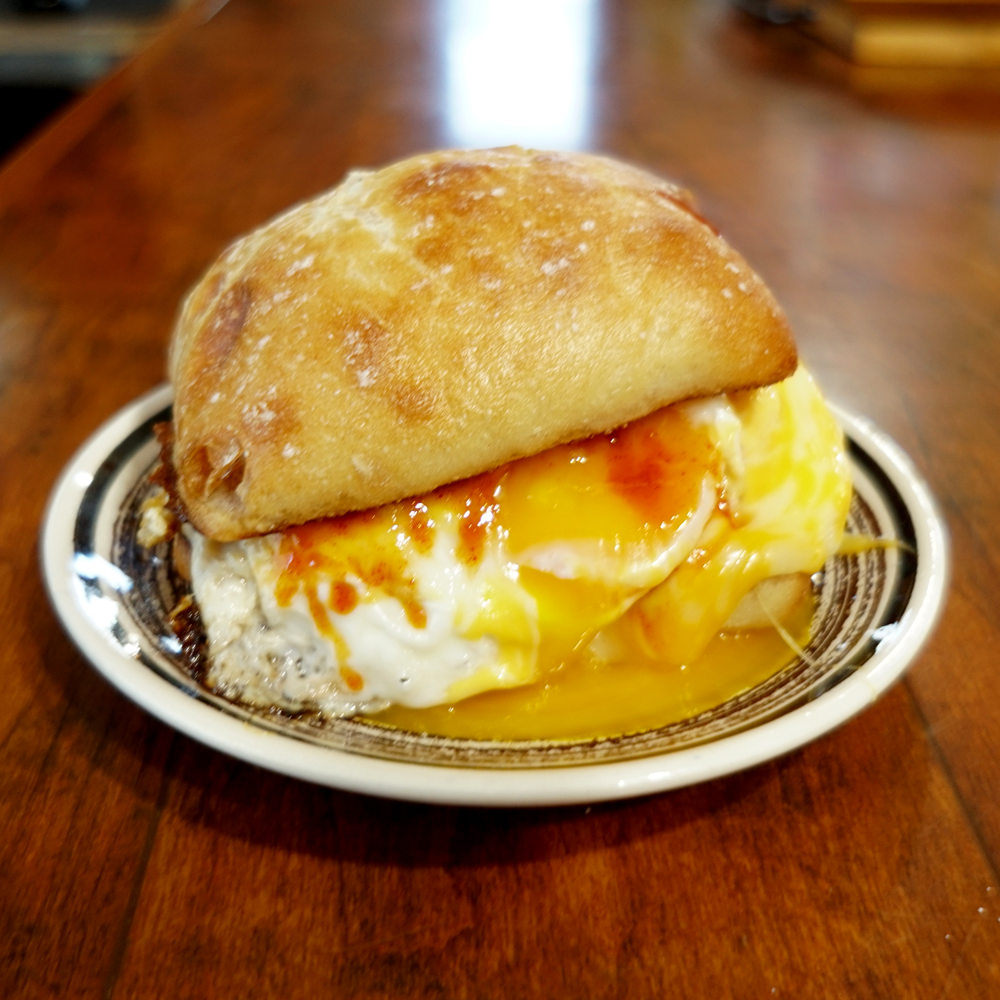

All hardy, light, and transportable meals, many find them appeal(ing)[rhyming is hard]

Ingredients
- 3.5lbs Beef Stew Meat
- 3 pears
- 1T Ginger Puree
- 3c Water
- 2 Beef Bouillon Cubes
- Flour
- Fresh Oregano and Sage
- Vegetable Oil
- Salt
Braised Beef with Ginger & Pear
- Cube the beef, core the pears, and slice them into eighths.
- Place cast iron skillet onto medium heat. While the skillet warms up, season the beef with salt and coat in a bowl with flour.
- Coat skillet with oil. Add the beef with tongs and brown on all sides.
- Crush the bouillon cubes and add it with the ginger to the beef.
- Carefully add the pears then pour in enough water to come up halfway up the meat. Cover the skillet and let simmer 45 minutes to an hour, or until the liquid has mostly cooked off.
- Slightly cool, then garnish with herbs.

Ingredients
- 2 Dozen Breakfast Sausage Links
- 12 Eggs
- 1 1/2c Shredded Strong Cheese
- 1/2c Dried Cranberries
- Salt
- Pepper
- Fresh Oregano or Sage
- Vegetable Oil
Halfling's Second Breakfast
- Heat iron skillet over medium heat. While it is warming up, beat eggs in a mixing bowl, then add cranberries, cheese, salt, and pepper. Set aside.
- Coat skillet with oil and add the sausages with oil stats to simmer.Then brown the sausages until cooked through. Set aside.
- Add more oil if low, change heat to low, then pour in egg mixture. Stir and fold eggs until they cook through. Remove from heat, garnish with herbs, and add sausages.
- (Optional, serve with Battle Biscuits)

Ingredients
- 1 Leek
- Dozen Asparagus Spears
- 1 Bouillon Cube (Vegan)
- 2T Flour
- 1/2 Sugar
- 1c Water
- 1c Almond Milk
- Vegetable oil
- Salt
- Fresh Oregano or Sage
Greenspear & Leek Stew (for your Elvish friends)
- Slice the leek down the center. Place the cut side down and slice it so you have half-moons. Toss the brown and decayed parts to the chickens. Cut the asparagus diagonally into 1" pieces.
- Heat cast iron skillet over medium heat. Grease it with oil, roughly 2 Tablespoons. Once it begins to simmer, add the leek and cook until slightly softened. Add the asparagus and cook for another minute.
- Stir in the flour and sugar into the pan and coat the vegetables, adding more oil if they start to stick.
- Once coated, slowly add the water to deglaze, add the bouillon and let simmer 3-4 minutes.
- Stir in the almond milk and fresh herb and let simmer another 5-6 minutes, stirring intermittently to thicken.
- Garnish with fresh herbs

Ingredients
- 1 Ciabatta Bun
- 4 Slices of Bacon
- 1/4c Water
- 2 Eggs
- 2 Slices of Strong Cheese
- Hot Sauce
Best Egg Sandwitch
- Over medium heat, place the bacon with the water in a cast iron pan. Once the water has evaporated and bacon starts to brown, flip and cook to desired cripiness.
- Toast the ciabatta bun in the bacon grease. Once toasted, remove from pan and top with bacon.
- Add extra grease to the cast iron if low, then crack the eggs into the pan. Fry sunny side up until the sides are brown and toasty. Add sliced cheese to the top of the eggs. Cover the pan until the cheese melts but the egg yolk is still runny.
- Place the eggs and cheese on top of the bacon and give a light dash of spicy sauce. Assemble the rest like a sandwitch.